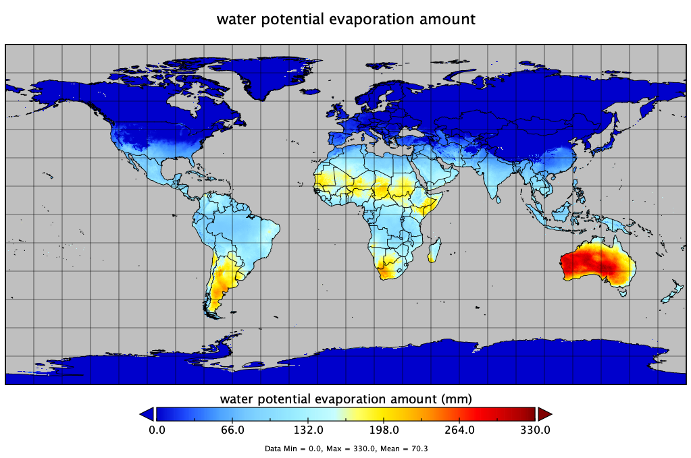

TerraClimate
Contents
TerraClimate#
TerraClimate is a dataset of monthly climate and climatic water balance for global terrestrial surfaces from 1958-2020. These data provide important inputs for ecological and hydrological studies at global scales that require high spatial resolution and time-varying data. All data have monthly temporal resolution and a 4-km (1/24th degree) spatial resolution.
About the data#
Characteristic |
Description |
|---|---|
Function |
Displays monthly climate datasets |
Variable |
Listed below |
Geographic coverage |
Global 90N-90S, 180W-180E |
Spatial resolution |
4-km at equator |
Temporal resolution |
monthly |
Format |
GeoTIFF |
Unit |
See list below |
List datasets#
Primary Climate Variables: Maximum temperature, minimum temperature, vapor pressure, precipitation accumulation, downward surface shortwave radiation, wind-speed
Derived variables: Reference evapotranspiration (ASCE Penman-Montieth), Runoff, Actual Evapotranspiration, Climate Water Deficit, Soil Moisture, Snow Water Equivalent, Palmer Drought Severity Index, Vapor pressure deficit
Name |
Description |
Units |
|---|---|---|
|
Actual Evapotranspiration, monthly total |
|
|
Climate Water Deficit, monthly total |
|
|
Potential evapotranspiration, monthly total |
|
|
Precipitation, monthly total |
|
|
Runoff, monthly total |
|
|
Soil Moisture, total column - at end of month |
|
|
Downward surface shortwave radiation |
|
|
Snow water equivalent - at end of month |
|
|
Max Temperature, average for month |
|
|
Min Temperature, average for month |
|
|
Vapor pressure, average for month |
|
|
Wind speed, average for month |
|
|
Vapor Pressure Deficit, average for month |
|
|
Palmer Drought Severity Index, at end of month |
|

Data access#
Individual years download link: http://thredds.northwestknowledge.net:8080/thredds/catalog/TERRACLIMATE_ALL/data/catalog.html
Also available at DEC S3: s3://wbgdecinternal-ntl/climate/data/terraclimate